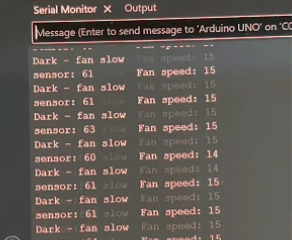

Schematic

Photoresistor Base Resistor Calculation:
My circuit uses a photoresistor as the variable resistor in a voltage divider, and a small DC fan as the output device.
The fan is controlled by an S8050 NPN transistor, with a 1N4007 diode for protection.
For the photoresistor voltage divider, I used a 10kΩ fixed resistor. The photoresistor resistance ranges from about 1kΩ (bright light) to about 100kΩ (dark).
To find the best fixed resistor value, I used the geometric mean:
R_fixed = √(R_low × R_high) = √(1000Ω × 100000Ω) = √100000000 = 10000Ω = 10kΩ.
So I used a 10kΩ resistor. This keeps Vout roughly centered over the full light range.
Voltage Divider (Vout) calculation:
Vout = 5V × R_fixed / (R_photoresistor + R_fixed).
- In bright light (R_photoresistor ≈ 1kΩ):
Vout = 5 × 10000 / 11000 ≈ 4.55V → analogRead ≈ 930
- In darkness (R_photoresistor ≈ 100kΩ):
Vout = 5 × 10000 / 110000 ≈ 0.45V → analogRead ≈ 92
So the THEORETICAL analogRead value ranges from about 92 (dark) to 930 (bright).
However, the ACTUAL analogRead value ranges from about 47 (dark) to 1015 (bright).
This may be due to real-world factors. For example, my specific sensor may have a different resistance range,
the Arduino 5V supply is not perfectly exact, and the working conditions such as temperature can be different from ideal conditions.
Transistor Base Resistor Calculation:
I used a 1kΩ resistor between Arduino pin 9 and the transistor base.
So, the base current is:
I_B = (5V − 0.7V) / 1000Ω ≈ 4.3mA,
which is well below the 40mA per-pin limit.
Firmware
// Analog pin A0 connected to the photoresistor voltage divider
int sensorPin = A0;
// Digital PWM pin 9 connected to the transistor base (controls fan speed)
int fanPin = 9;
// Setup runs once when the Arduino powers on
void setup() {
// Start serial communication at 9600 baud
Serial.begin(9600);
// Set the fan control pin as an output
pinMode(fanPin, OUTPUT);
}
// Loop runs over and over forever
void loop() {
// Read the photoresistor value from A0 (range 0 to 1023)
int sensorValue = analogRead(sensorPin);
// Map the 0-1023 sensor value to a 0-255 PWM value for the fan
int fanSpeed = map(sensorValue, 0, 1023, 0, 255);
// Write the PWM value to the fan pin to control fan speed
analogWrite(fanPin, fanSpeed);
// Print the label "sensor: " to the serial monitor
Serial.print("sensor: ");
// Print the raw photoresistor reading
Serial.print(sensorValue);
// Print a tab and the label "Fan speed: "
Serial.print("\t Fan speed: ");
// Print the mapped fan speed value and move to a new line
Serial.println(fanSpeed);
// Check if the sensor value is greater than 600 (bright condition)
if (sensorValue > 600) {
// Print a message indicating bright light and fast fan
Serial.println("Bright - fan fast");
// Check if the sensor value is not greater than 600 (dark condition)
} else {
// Print a message indicating dark condition and slow fan
Serial.println("Dark - fan slow");
}
// Wait 50 ms before the next reading for stability
delay(50);
}
Circuit's Operation

When the photoresistor is exposed to bright light, the sensor reading increases and the fan spins faster.
When the photoresistor is covered (dark), the sensor reading decreases and the fan slows down.
Serial monitor example output:
sensor: 829 Fan speed: 206
Bright - fan fast
sensor: 60 Fan speed: 14
Dark - fan slow

Additional Questions
Q1: In your voltage divider, can the variable resistor be either R1 or R2 or does it need to be
one or the other? Justify your answer with example calculations.
In my voltage divider, the variable resistor can be either R1 or R2.
Example calculation: sensor as R1
Vout = Vin × R2 / (R1 + R2)
R2 = 10kΩ fixed, R1 (sensor) goes from 1kΩ to 100kΩ:
- when R1 = 1kΩ: Vout = 5 × 10000 / 11000 = 4.55V
- when R1 = 100kΩ: Vout = 5 × 10000 / 110000 = 0.45V
If light increases, R1 decreases, Vout increases.
Example calculation: sensor as R2
Vout = Vin × R2 / (R1 + R2).
R1 = 10kΩ fixed, R2 (sensor) goes from 1kΩ to 100kΩ:
- when R2 = 1kΩ: Vout = 5 × 1000 / 11000 = 0.45V
- when R2 = 100kΩ: Vout = 5 × 100000 / 110000 = 4.55V
If light increases, R2 decreases, so Vout decreases.
Both work. I chose the sensor as R1 so that bright light gives a higher analogRead value, which is more intuitive.
Q2: Draw a graph where the x-axis is time and the y-axis is voltage. Plot the voltage at V-measure (where your pin is reading the voltage) of your voltage divider of your shared gif/video.

The graph shows one 10-second loop of the V-measure voltage during the GIF:
- 0–1s: Hand covering the sensor, voltage is low (~0.25V).
- 2–4s: Hand removed, voltage rises (~1.0V to ~3.0V).
- 5s: Flashlight shining, voltage reaches its peak (~4.05V).
- 6–9s: Flashlight removed, voltage drops back down (~3.5V to ~1.0V).
- 10s: Hand covers the sensor again, returning to ~0.3V, and the loop repeats.
Q3: AnalogWrite and analogRead are respectively 8-bit and 10-bit values. Imagine you had 10-bit PWM and a 16-bit analog-to-digital converter instead. How would this change your map() code? Explain your answer.
Currently:
- analogRead is 10-bit: 0–1023
- analogWrite is 8-bit: 0–255
If ADC were 16-bit and PWM were 10-bit:
- analogRead range: 0–65535 (2^16 − 1)
- analogWrite range: 0–1023 (2^10 − 1)
Thus, the map() code would change from
map(sensorValue, 0, 1023, 0, 255)
to
map(sensorValue, 0, 65535, 0, 1023).
This means the ADC can detect 65536 different levels, and the PWM resolution would increase from 256 steps to 1024 steps, which could make the fan speed smoother and more precise.